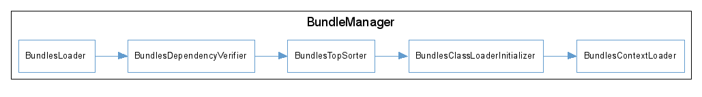

This package contains the mechanism for loading ConQAT bundles (plugins, extensions,...).
The mechanism is implemented in a sequence of steps: a raw configuration object
{@link org.conqat.engine.core.bundle.BundlesConfiguration} is set up and enriched in several
processing steps (the processing is initialized by {@link org.conqat.engine.core.bundle.BundlesManager#initBundles()}):
- {@link org.conqat.engine.core.bundle.BundlesLoader}: In the first step, the bundle loader
loads all bundles from all specified bundle locations. To parse the bundle
descriptors it uses {@link org.conqat.engine.core.bundle.BundleDescriptorReader}s.
- {@link org.conqat.engine.core.bundle.BundlesDependencyVerifier}: During the second step, the
dependency verifier ensures that for all loaded bundles all dependencies are satisfied.
- {@link org.conqat.engine.core.bundle.BundlesTopSorter}: The BundlesTopSorter makes sure that
bundle dependencies are acyclic.
- {@link org.conqat.engine.core.bundle.BundlesClassLoaderInitializer}: In the third step, the
bundle class loader is initialized according to the bundle configuration.
- {@link org.conqat.engine.core.bundle.BundlesContextLoader}: Finally, in the last step, the context
loader checks if bundles define context classes, loads and instantiates them.
The figure below expresses the execution order as a directed graph:
